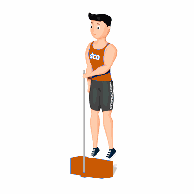

Elevação de Panturrilha Unilateral

Esse exercício, por ser executado de forma unilateral, a carga será maior, dessa forma recrutando com maior eficiência o músculo Gastrocnêmio.
Ficha Técnica
Tipo: Musculação
Grupo Muscular: Perna
Aparelho: Nenhum
Músculos: Nenhum
Como realizar
- Suba sobre um degrau apoiando a ponta do pé e deixando o calcanhar para fora, enquanto o outro pé fica estendido sem apoiar no degrau;
- Coluna reta e abdômen contraído durante toda execução do exercício;
- Empurre seu corpo para cima elevando o calcanhar o máximo que conseguir;
- Concentre toda a força nos músculos das panturrilha e retorne à posição inicial lentamente;
- Repita os movimentos, conforme o número de repetições orientado pelo professor.
 RC STORE
RC STORE